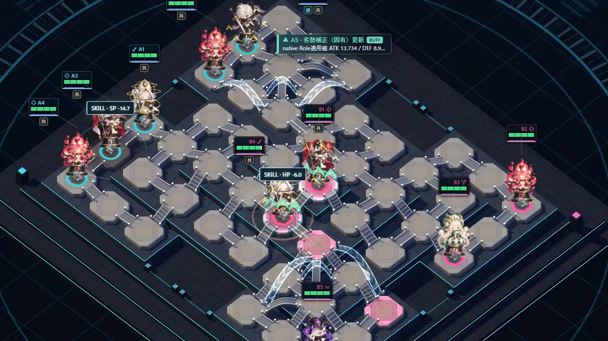

- ノード
- 50
- リンク
- 78
- 戦闘
- 5対5
- 登場作品
- 40作品
02思想は、領土になる
一冊の本がユニットになり、ユニットが土地になる。
SoTTのユニットは、すべて実在の作品です。ゲームが読むのは、作品ごとの10の思想パラメータだけ。もっとも強い成分が役割を決め、それぞれの成分がひとつずつ能力値になり、ユニットが歩いた場所が領土になります。
01 · 作品
はじまりは、一冊のテキスト。
登場するのは40作品。その大半はProject Gutenbergに収録されたパブリックドメインの書物です。バランスのために作った設定はなく、ユニットの性質は作品から読み取られます。
02 · 概念パラメータ
思想を、10の成分で。
作品はそれぞれ、ThoughtMapのパラメータ形式による思想構成を持っています。哲学・心理・科学・道徳・経済・思想・感情・個人・共同体・因果の10成分です。
03 · ユニット
いちばん強い成分が、役割を選ぶ。
最大の成分が10種類のロールのひとつに対応し、各成分はちょうどひとつの能力値になります。哲学は攻撃力に、個人はHPに、因果は機動力に。感情が強い作品はヒーラーになります。
04 · ネットワーク
置くのはマス目ではなく、グラフの上。
50ノードの盤面に5体を配置します。リンクや同じ領土でつながった味方どうしは共鳴し、通常攻撃とSP回復が最大3段階まで強まります。
05 · 戦術
歩いた場所が、自分の土地になる。
ユニットが通ったノードは自軍の領土になり、立ち去ったあとも残ります。十分な広さを、十分な時間だけ守り抜けば、それが勝利です。
実装状況現在実装されているのは、あらかじめ算出したパラメータをビルドに同梱した40作品の固定ロスターです。実行時にThoughtMapへ接続する機能はまだなく、ThoughtMapに追加した作品が自動でSoTTに登場することはありません。
03戦場
50のノード。前線は、ない。
TACTICALは、50ノード・78リンクのグラフで戦う5対5の戦闘です。守るべき横一列はありません。射程も支援も勝敗も、その瞬間のつながり方から決まります。
実装状況インタラクティブな盤面にはJavaScriptが必要です。図が示すルールは下にまとめています。
録画した戦闘の実際の盤面グラフ（盤面シード73）と初期配置から作成しています。ここでの移動は1回につき1リンク、戦闘なしに簡略化しています。実際のルールは下の一覧に、実際のゲームは映像にあります。
01 · 盤面
シードから生成されるグラフ。
八角形のノード50個を78本のリンクが結びます。通常の移動はリンクに沿い、開始時はすべてのノードが中立です。
02 · 領土
動くことが、奪うこと。
移動で通過したノードはすべて自軍の領土になり、敵の領土も塗り替えられます。領土の多い側ほど、スキルの効果も少し強くなります。
03 · 接続
つながった味方は共鳴する。
リンクまたは同じ領土でつながった味方どうしは最大3段階の共鳴を得て、通常攻撃は最大1.15倍、SP回復は最大1.3倍になります。
04 · 分断
リンクは、断ち切れる。
遊撃はリンクを切り、構築はリンクを作ります。同じネットワークに味方がいなくなったユニットは、受けるダメージが増え、次の行動も遅くなります。
05 · 行動順
ラウンドではなく、時間で。
行動ごとに、その内容と速度に応じたバトルタイム（BT）を消費します。次に準備が整ったユニットが、次に動きます。
06 · 勝利
決着のつき方は3つ。
相手を全滅させる。または23ノード以上を4ノード差以上で3 BT維持する。あるいは180 BTか1,000コマンドに達した時点で優勢である。
同じ盤面を、実際のプレイで。
実際のプレイ映像
04戦術の判断
どのコマンドも、結果を先に見せる。
ユニットを選び、コマンドを選び、予測を読んでから実行する。ここに並ぶのは、実際の操作画面を、ゲームそのままのテンポで録った映像です。
01 · 移動
進みながら、土地を取る。
移動できるノードがリンクに沿って光ります。自軍の領土のなかでは自由に動けるので、序盤に取った土地が、あとで速さになります。
MOVE領土自軍ネットワーク
02 · スキル
SPは、効く場面で。
スキルの対象ウィンドウには、射程・消費・再使用までの時間、そして計算済みの結果が、実行前に表示されます。映像は狙撃のLONGSHOTが盤面を横切る場面です。
SKILLSP結果予測
03 · 手応え
効いた一撃が、わかる。
攻撃側が踏み込み、時間が一瞬止まり、相手がのけぞる。手応えは通常・強打・とどめの3段階。ランダムなクリティカルはありません。
踏み込みヒットストップ3段階
04 · BUFF / DEBUFF
効果には、残り時間がある。
効果はバトルタイムで管理され、いつ切れるかが表示されます。妨害のDISRUPTは敵の次の行動を遅らせ、その幅もパネルに示されます。
BUFFDEBUFFDISRUPT
05 · ヒーラー
隣を手当てし、遠くを癒やす。
現在のビルドでは、支援の基本行動はMEND。SP消費なしで使えますが、対象は隣接マスの負傷した味方だけです。遠距離ヒールはSPを使って2リンク先まで届き、あふれた回復はバリアになります。
MEND · SP 0遠距離ヒールバリア
06 · 領土
盤面を保てば、勝てる。
HUDは両軍のノード数を23の目標と並べて示します。リードを3 BT守り切れば、生き残りの数にかかわらず、領土で決着がつきます。
23 / 504ノード差3 BT
05プレイ画面
ビルドから、そのまま。
開発ビルドを1920×1080で撮影した、無加工のスクリーンショットです。選ぶと原寸で表示します。
06AIが戦術を指す
ローカルの言語モデルが、ルールどおりに戦う。
実験として、AI VTuberのシステムを外部プレイヤーとしてSoTTにつなぎました。ローカルで動くQwen3 4Bが部隊を編成し、配置し、一戦を最後まで指揮します。そのあいだ、キャラクターたちが実況します。
- 76受入試験の一戦で、モデルが開始から決着までに選んだ合法行動の数
- 10戦闘前にモデルが下した編成・配置の判断
- 150その一戦の全コマンド数。Replayから再シミュレーションし、結果は完全に一致
- 0モデル側の無効コマンド、代行行動、時間切れによる自動行動
人間
始めて、止める。
人はセッションを起動し、必要なら停止します。録画した一戦のあいだ、ゲームのコマンドは一度も手で入力していません。
敵AI
ゲームに内蔵された対戦相手。
チームBを動かすのは、SoTT自身のAIです。合法なコマンドすべてを評価し、領土へ向かう経路を探索します。言語モデルではありません。
Game Agent
外部から参加するプレイヤー。
チームAを動かすのは、ローカルで動作するQwen3 4Bです。観測した戦況を読み、ゲームが提示する合法コマンドの一覧からひとつを選びます。
- 戦況の観測
- 合法コマンド一覧
- モデルが選択
- エンジンが検証
- Replayログ
実験の、実際の録画。
実録画
この実験が示していないこと
- 合法であることと、強いことは別です。モデルはこの一戦を領土で落とし、より長い5連戦でも全敗しました。
- 実況には、戦況から読み取れる以上の推測が混じることがあります。
- 長時間の無人運転は検証していません。
07ThoughtMapからSoTTへ
ひとつの問いを、3つのかたちで。
作品の意味を、測り、手に取り、遊べるものとして扱ったら何が起きるのか。Jinn Projectはその問いに、ひとつの研究ツールとふたつのゲームで答えてきました。
研究・制作主体
Jinn Project
3つすべての母体となる独立プロジェクト。見えない構造を見えるかたちにする、研究ツール・オープンなシステム・ゲームを制作しています。
Jinn Project ホーム
解析
ThoughtMap
数万の作品を意味で検索・比較し、それぞれを思想の構成として記述する研究基盤。
ThoughtMapについて
カード戦略
Source of Thought
作品がカードになる。10枚のデッキ、5人の出撃メンバー、5×5の陣形。いまブラウザで遊べます。
Source of Thought
ネットワーク戦術
Source of Thought Tactics
作品がユニットになる。移動がそのまま領土になる、50ノードのネットワークでの5対5。開発中、アルファ版を公開中。
現在のページ
08開発状況
開発中。ブラウザで、いま遊べます。
TACTICALのアルファ版をブラウザで公開しています。開発中のビルドのため、ルール・バランス・画面は今後変わります。BGMはまだ入っていません。
- 状況
- 開発中アルファ版をブラウザで公開中
- 掲載内容
- TACTICAL — 50ノードでの5対52026年11月19日撮影、ルールセット0.28.1
- プラットフォーム
- WebブラウザTypeScriptとThree.js
- ロスター
- 40作品・10ロールビルドに同梱した固定ロスター
- 保存
- このブラウザ内のみ編成はほかの端末と同期されません
- ソースコード
- 非公開開発中のため公開していません
アルファ版を遊ぶ。
5つの作品を選んで配置し、AIを相手に5対5の戦闘を最後まで遊べます。同じ研究から生まれたカードゲーム、Source of Thoughtも公開中です。
無料・登録不要。TACTICALのアルファ版が新しいタブで開きます。パソコンのブラウザを推奨します。
SoTTをプレイ （新しいタブで開きます）Source of Thoughtを遊ぶ Jinn Projectのリンク一覧 （新しいタブで開きます）